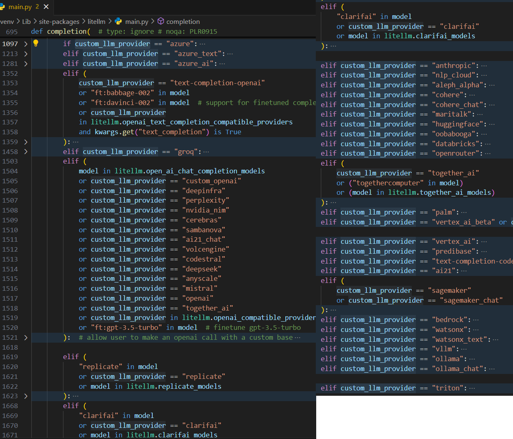
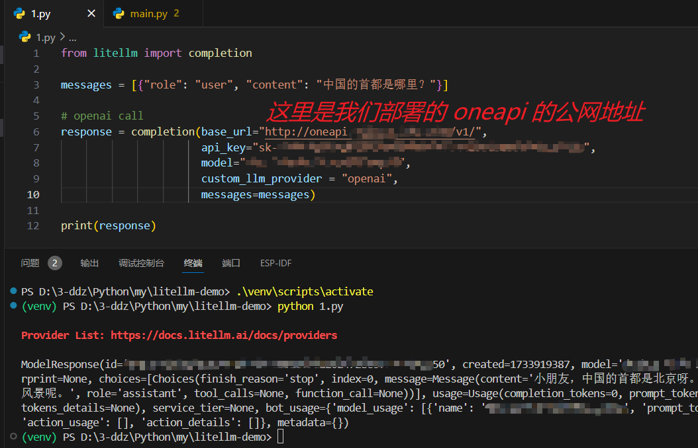
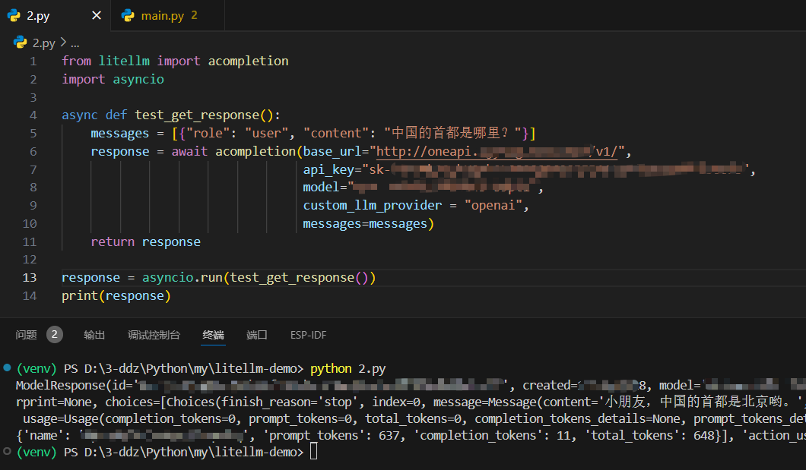

不得不吹一把，这家伙适配的是真多啊！下面是代码中的截图（当然文档中也有支持的 providers 列表）：

这种方式就比较简单了，他只是一个
# 注意：windows 环境下
# 创建虚拟环境
python -m venv venv
# 激活虚拟环境
.\venv\scripts\activate
# 退出虚拟环境
deactivate
# 安装依赖
pip install litellm
这里为了省事儿，用了
from litellm import completion
messages = [{"role": "user", "content": "中国的首都是哪里？"}]
response = completion(base_url="http://oneapi（你自己的地址）:3000/v1/",
api_key="sk-xxx",
model="模型名称",
custom_llm_provider = "openai",
messages=messages)
print(response)

和上面一样，还是那个配方……
from litellm import acompletion
import asyncio
async def test_get_response():
messages = [{"role": "user", "content": "中国的首都是哪里？"}]
response = await acompletion(base_url="http://oneapi（你自己的地址）:3000/v1/",
api_key="sk-xxx",
model="模型名称",
custom_llm_provider = "openai",
messages=messages)
return response
response = asyncio.run(test_get_response())
print(response)

和上面一样，还是那个配方……
from litellm import completion
messages = [{"role": "user", "content": "中国的首都是哪里？"}]
response = completion(base_url="http://oneapi（你自己的地址）:3000/v1/",
api_key="sk-xxx",
model="模型名称",
custom_llm_provider = "openai",
messages=messages,
stream=True)
all_answer_text = ""
for part in response:
all_answer_text += (part.choices[0].delta.content or "")
print(all_answer_text)
敬请期待